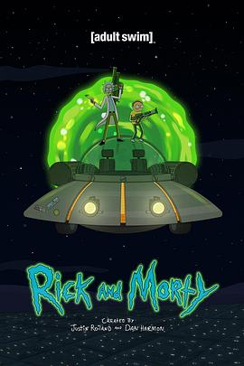
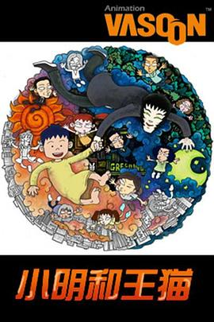

剧
共 95（看过 53 / 想看 42）
看过（53）
| 封面 | 标题 | 作者/导演 | 评分 | 时间 | 短评 | 链接 |
|---|---|---|---|---|---|---|
| 封面 | 电锯人 | 中山龙/吉原达矢 | ★★★★☆ | 2026-09-14 | 补标，待会要从豆瓣导入所以先把这个标上 当时追着看的，每周看电锯人和孤独摇滚，真怀念 当时感觉没有很糟，现在已经忘记了 |
NeoDB 豆瓣 |
| 绝命毒师 第五季 | 迈克尔·斯洛维斯、米歇尔·麦克拉伦、亚当·伯恩斯坦等 | ★★★★★ | 2026-09-04 | 太爽，最后倒在实验室为jesse开脱，完美的闭环 感觉一点点小瑕疵就是最后两集white转变的实在是太快了 |
NeoDB 豆瓣 | |
 |
绝命毒师 第四季 | 亚当·伯恩斯坦、米歇尔·麦克拉伦、大卫·斯雷德等 | ★★★★☆ | 2026-08-21 | 结尾头皮发麻 | NeoDB 豆瓣 |
| 安达与岛村 | 桑原智、矢花馨、吉村文宏等 | ★★☆☆☆ | 2026-08-19 | 烂 | NeoDB 豆瓣 | |
| — | 安达与岛村 | ★★☆☆☆ | 2026-08-17 | 8月18日00:36:21 甚至都算不上一个正常的故事 莫名其妙不知所谓 |
NeoDB | |
| 迷宫饭 | 宫岛善博 | ★★★★☆ | 2026-08-10 | 前几集还有点看不下去，越看越精彩 很喜欢，9/10 第二季快点吧 一共四个ed和op都太好听 |
NeoDB 豆瓣 | |
| — | 迷宫饭 | ★★★★☆ | 2026-08-09 | — | NeoDB | |
| 绝命毒师 第三季 | 布莱恩·克兰斯顿、亚当·伯恩斯坦、米歇尔·麦克拉伦等 | ★★★★☆ | 2026-08-02 | 都看到这里了，还是坚持看完吧 比想象中要烂 |
NeoDB 豆瓣 | |
 |
绝命毒师 第一季 | 亚当·伯恩斯坦、文斯·吉利根、翠西亚·布洛克等 | ★★★★☆ | 2026-07-28 | 20260721 | NeoDB 豆瓣 |
| 封面 | 绝命毒师 第二季 | 亚当·伯恩斯坦、米歇尔·麦克拉伦、布莱恩·克兰斯顿等 | ★★★★☆ | 2026-07-27 | — | NeoDB 豆瓣 |
| — | 绝命毒师 | /person/1WVYeB6BpLEA3Ui03SVRQ6 | ★★★★☆ | 2026-07-20 | — | NeoDB |
| 封面 | 下流梗不存在的灰暗世界 | 铃木洋平、湖山祯崇、笹原嘉文等 | ★★☆☆☆ | 2026-07-17 | 两天看完。后半段属实太无趣，毁了一个好题材 | NeoDB 豆瓣 |
| — | 没有黄段子的无聊世界 | ★★☆☆☆ | 2026-07-16 | 一开始还挺有意思的 | NeoDB | |
| 异国日记 | 大城美幸 | ★★★★☆ | 2026-06-27 | 有些地方没看懂 有点难对asa产生共鸣，但还是一部非常有趣的作品 要是原作完结了再改成动画就好了 |
NeoDB 豆瓣 | |
| — | 异国日记 | ★★★★☆ | 2026-06-26 | — | NeoDB | |
| 白箱 | 水岛努、今泉贤一、菱川直树等 | ★★★★☆ | 2026-06-16 | 隔了几天之后三天4集+6集+4集一口气看完了，还剩两个ova和剧场版没有看 非常有意思 |
NeoDB 豆瓣 | |
| — | 白箱 | ★★★★☆ | 2026-06-15 | — | NeoDB | |
| — | 这个美术部有问题！ | 及川启/池端隆史/平峰义大/岩崎光洋/山本天志/冈村正弘/直 | ★★★★☆ | 2026-04-06 | 很不错的作品，也许有空闲会去看看漫画 | NeoDB 豆瓣 |
| — | 章鱼哔的原罪 | ★★★★★ | 2025-12-20 | 12月20日晚 | NeoDB | |
| — | 时光流逝，饭菜依旧美味 | ★★★★☆ | 2025-12-17 | 12月17日 花了好长时间，偶尔看一集，终于看完了 没有什么特殊的感觉，很不错的日常番 |
NeoDB | |
| — | 我们不可能成为恋人！绝对不行。 (※似乎可行？) | ★★★★☆ | 2025-09-25 | 9月26日00:17:07 好喜欢紫阳花篇的这几集 紫阳花一开始无感后面越看越喜欢呢 期待十一月的续篇 |
NeoDB | |
| — | Lycoris Recoil: Friends are thieves of time. | ★★★★★ | 2025-05-27 | 还是日常好哇 为什么不出一万集的日常给我看呜呜呜 |
NeoDB | |
| — | 颂乐人偶 | ★☆☆☆☆ | 2025-03-26 | 第一次打一星 难忘的追番经历 |
NeoDB | |
| — | Lycoris Recoil | ★★★★★ | 2025-03-24 | 3月25日23:47:08 神作 |
NeoDB | |
| — | 境界的彼方 | ★★★★☆ | 2025-02-06 | 补，初二看的 | NeoDB | |
| — | 迷途之子!!!!! | ★★★★★ | 2025-01-22 | 1月23日00:50:19 | NeoDB | |
| — | 少女乐队Cry | ★★★★☆ | 2025-01-07 | 考完期末看的 tomo太喜欢了 |
NeoDB | |
| — | 比宇宙更遥远的地方 | ★★★★★ | 2024-12-02 | 12月3日17:21:01于宿舍看完了最后两集 每个人的心结不断解开，只剩女主的时候，朋友最后的回应真的是太惊喜了 |
NeoDB | |
| — | 少女终末旅行 | つくみず/尾崎隆晴 | ★★★★☆ | 2024-10-21 | 10月22日中午在宿舍看完最后两集 断断续续看了三个月，终于看完 节奏实在太慢 结局好评，雨点敲打瓶瓶罐罐的声音当做乐器，二度出现 如果我不知道漫画结局的话这个结局或许看起来充满希望吧…现在想来漫画结局属实有点恶趣味 |
NeoDB |
| — | 败犬女主太多了！ | Takibi Amamori | ★★★☆☆ | 2024-09-28 | 觉得8.8还是有点虚高，拉低一下 可能还是我的期待太高了，实际看下来，一部制作优良的青春恋爱戏剧，仅此而已 |
NeoDB |
| 我的青春恋爱物语果然有问题。 (我的青春恋爱物语果然有问题 第二季 续) | 及川启、高桥知也、池端隆史等 | ★★★★★ | 2024-05-08 | — | NeoDB 豆瓣 | |
| 我的青春恋爱物语果然有问题。 (我的青春恋爱物语果然有问题) | 吉村爱、高桥秀弥、有富兴二等 | ★★★★★ | 2024-05-08 | — | NeoDB 豆瓣 | |
| 我的青春恋爱物语果然有问题。 (我的青春恋爱物语果然有问题 第三季 完) | 及川启 | ★★★★★ | 2024-05-08 | — | NeoDB 豆瓣 | |
 |
来自深渊：烈日的黄金乡 | 小岛正幸 | ★★★★★ | 2024-01-19 | — | NeoDB 豆瓣 |
| — | 动物新世代 | /person/4eb7vLYbX78uxoqMPsa9rw | ★★★☆☆ | 2024-01-11 | — | NeoDB |
| — | 来自深渊 | ★★★★★ | 2024-01-11 | 神作 | NeoDB | |
 |
瑞克和莫蒂 第四季 | 雅各布·海尔、艾丽卡·海耶斯 | 未评分 | 2023-08-28 | — | NeoDB 豆瓣 |
| 封面 | 瑞克和莫蒂 第五季 | 贾斯汀·罗兰 | ★★★★★ | 2023-08-28 | — | NeoDB 豆瓣 |
| — | 第1集 | 未评分 | 2023-08-28 | — | NeoDB | |
| — | 第1集 | 未评分 | 2023-08-28 | — | NeoDB | |
| — | 玉子市场 | ★★★★★ | 2023-08-12 | — | NeoDB | |
| — | 新世纪福音战士 | ★★★★★ | 2023-06-12 | — | NeoDB | |
| — | 冰果 | 武本康弘/木上益治/石原立也/山田尚子/石立太一/北之原孝将 | ★★★★★ | 2023-01-27 | 心目中的神作 mayaka真的太可爱了呜呜 |
NeoDB |
| — | 樱花庄的宠物女孩 | ★★★★★ | 2023-01-27 | — | NeoDB | |
| — | 孤独摇滚！ | ★★★★★ | 2022-12-24 | 喜欢凉和虹夏 颜艺看的不尬（点名某某国漫），偶尔突破次元壁插入现实画面，这些地方让人看的很开心 有一种日常番的感觉 推荐所有不开心的人去看!!! |
NeoDB | |
| — | 疯狂动物城+ | ★★★★★ | 2022-11-11 | — | NeoDB | |
| — | 赛博朋克：边缘行者 | /person/5bp058t91vNvuHmOgei3ee | ★★★★★ | 2022-10-24 | 网课两天看完 看的时候心里一直在期望一个大团圆的结局，看完有种怅然若失的感觉 其实细想，这何尝不是一种HE呢，大卫为了自己，也为了别人的梦想拼命到了最后一刻。露西也一定会好好生活下去 只是心疼丽贝卡，心疼那些无辜死去的人 “夜之城没有活着的传奇” 自始至终他们的反抗都没有丝毫地改变夜之城…对大卫所做的只是把他当做一个试验品罢了，亚当重锤也证明了他们的无力 大卫并没有什么特别的能力，但他也是独一无二的传奇 以及音乐和画风都很棒 ————— 豆瓣的氛围是什么鬼… |
NeoDB |
| — | 瑞克和莫蒂 | /person/6Y1KjVJrPk7wqJWMZ6scF0 | ★★★★★ | 2022-01-01 | — | NeoDB |
| — | 功勋 | ★★★★☆ | 2021-12-22 | 看完了袁隆平的部分，感谢班主任 | NeoDB | |
| 动物狂想曲 第二季 | 松见真一、则座诚、下司泰弘 | ★★★★★ | 2021-08-23 | 名为beastar但和beastar一点关系都没有… 结局完全看不够啊 给我出第三季!! |
NeoDB 豆瓣 | |
| — | 动物狂想曲 | ★★★★★ | 2021-08-22 | — | NeoDB | |
| 封面 | 去他*的世界 第二季 | 戴斯特尼·埃卡拉加、露西·福布斯 | ★★★★★ | 2021-08-17 | — | NeoDB 豆瓣 |
| — | 去他*的世界 | /person/5FiWW9aAlU7GXWHEv2zjbX | ★★★★★ | 2021-08-17 | — | NeoDB |
{kind=link}
{kind=link}
{kind=link}
{kind=link}
{kind=link}
想看（42）
| 封面 | 标题 | 作者/导演 | 评分 | 时间 | 短评 | 链接 |
|---|---|---|---|---|---|---|
| — | 女高中生的虚度日常 | 未评分 | 2026-08-06 | — | NeoDB | |
| — | 二十世纪电气目录 | 未评分 | 2026-06-29 | — | NeoDB | |
| — | 穹庐下的魔女 | 未评分 | 2026-06-29 | — | NeoDB | |
| — | 琉璃的宝石 | 未评分 | 2025-12-25 | — | NeoDB | |
| 暗黑破坏神在身边。 | 浊川敦、嵯峨敏、星野真等 | 未评分 | 2025-12-23 | — | NeoDB 豆瓣 | |
| — | 四月一日灵异事件簿 | 未评分 | 2025-11-21 | — | NeoDB | |
| — | 热点 | 笨蛋节奏 | 未评分 | 2025-09-03 | — | NeoDB |
| — | 重启人生 | 未评分 | 2025-09-03 | — | NeoDB | |
| — | 豺狼的日子 | /person/4Fc91zkXVBKWpbJqVOzypP | 未评分 | 2025-08-26 | — | NeoDB |
| — | 博多豚骨拉面团 | 未评分 | 2025-06-29 | — | NeoDB | |
| — | 末日后酒店 | 未评分 | 2025-05-13 | — | NeoDB | |
| — | mono女孩 | 未评分 | 2025-05-12 | — | NeoDB | |
| — | 世界奇妙物语 | 未评分 | 2025-04-23 | — | NeoDB | |
| — | 我不受欢迎，怎么想都是你们的错！ | 未评分 | 2025-02-20 | — | NeoDB | |
| — | 水果篮子 | 未评分 | 2025-01-27 | — | NeoDB | |
| — | 终末列车去哪里? | 未评分 | 2025-01-21 | — | NeoDB | |
| — | 放学后失眠的你 | 未评分 | 2024-12-16 | — | NeoDB | |
| — | 再见！绝望先生 | 未评分 | 2024-12-13 | — | NeoDB | |
| — | 乱马½ | 未评分 | 2024-11-23 | — | NeoDB | |
| — | 日常 | 未评分 | 2024-10-20 | — | NeoDB | |
| — | 星际牛仔 | 未评分 | 2024-10-20 | — | NeoDB | |
| — | 午夜福音 | Pendleton Ward/Duncan Trussell | 未评分 | 2024-03-30 | — | NeoDB |
| — | 好兆头 | /person/0kVwKr73nedfbrL7toLtRg | 未评分 | 2024-03-17 | — | NeoDB |
| — | 小市民系列 | 未评分 | 2024-01-12 | — | NeoDB | |
| — | 跃动青春 | 未评分 | 2023-12-25 | — | NeoDB | |
| — | 拾荒者统治 | /person/3FXZtwOWDlPB5PbyYIwPon | 未评分 | 2023-11-17 | — | NeoDB |
| — | 怪物 | 未评分 | 2023-09-19 | — | NeoDB | |
| — | 娜娜 | /person/796cuJqxErGu8dLHBybeEA | 未评分 | 2023-09-19 | — | NeoDB |
| — | 平家物语 | 未评分 | 2023-08-22 | — | NeoDB | |
| — | 漂流少年 | 未评分 | 2023-08-12 | — | NeoDB | |
| 强风吹拂 | 野村和也、板津匡览、江副仁美等 | 未评分 | 2023-07-26 | — | NeoDB 豆瓣 | |
| 降世神通：最后的气宗 (卷三：火) | 伊桑·斯波尔丁、吉安卡洛·沃尔普、乔伊姆·多斯·桑托斯 | 未评分 | 2023-06-30 | — | NeoDB 豆瓣 | |
 |
万神殿 第一季 | 大卫·德伍曼·伍、梅尔·祖耶、埃德·塔德姆等 | 未评分 | 2023-06-10 | — | NeoDB 豆瓣 |
 |
小明和王猫 | 王川 | 未评分 | 2023-05-31 | — | NeoDB 豆瓣 |
| — | 漫长的季节 | Xin Shuang | 未评分 | 2023-05-06 | — | NeoDB |
| — | 韦恩 | Shawn Simmons | 未评分 | 2023-02-01 | — | NeoDB |
| 是，首相 第二季 | 彼得·惠特莫尔、西德尼·洛特比 | 未评分 | 2022-01-01 | — | NeoDB 豆瓣 | |
| — | 是，大臣 | Jonathan Lynn/Antony Jay | 未评分 | 2022-01-01 | — | NeoDB |
| 封面 | 是，大臣 第二季 | Peter Whitmore、Sydney Lotterby | 未评分 | 2022-01-01 | — | NeoDB 豆瓣 |
| 是，大臣 第三季 | 西德尼·洛特比、彼得·惠特莫尔 | 未评分 | 2022-01-01 | — | NeoDB 豆瓣 | |
| — | 是，首相 | Jonathan Lynn/Antony Jay | 未评分 | 2022-01-01 | — | NeoDB |
| — | 奇巧出租车 | 未评分 | 2021-12-22 | — | NeoDB |
{kind=link}